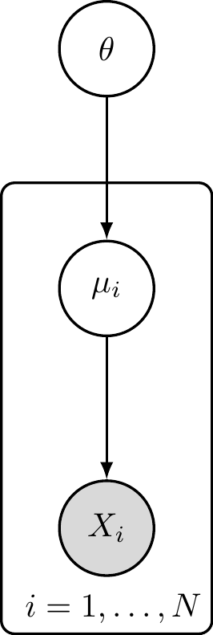

The foundation of Bayesian inference relies on the relationship between the prior distribution, the likelihood of the data, and the posterior distribution. This relationship is governed by Bayes’ Theorem (or Law).
Definition 3.1 (Posterior Distribution) Suppose we have a parameter \(\theta\) with a prior distribution denoted by \(\pi(\theta)\). If we observe data \(x\) drawn from a distribution with probability density function (pdf) \(f(x; \theta)\), then the posterior density of \(\theta\) given the data \(x\) is defined as:
where \(m(x)\) is the marginal distribution (or marginal likelihood) of the data, calculated as: \[
m(x) = \int_{\Theta} \pi(\theta) f(x;\theta) d\theta
\]
In this context, \(m(x)\) acts as a normalizing constant. Since it depends only on the data \(x\) and not on the parameter \(\theta\), it ensures that the posterior density integrates to 1 but does not influence the shape of the posterior distribution.
Thus, we often state the proportional relationship:
We can recognize this kernel as a Beta distribution. Therefore, we conclude that the posterior distribution is:
\[
\theta|x \sim \text{Beta}(a+x, b+n-x)
\]
Properties of the Posterior:
The posterior mean is: \[E(\theta|x) = \frac{a+x}{a+b+n}\] As \(n \to \infty\), this approximates the maximum likelihood estimate \(\frac{x}{n}\).
The posterior variance is: \[\text{Var}(\theta|x) = \frac{(a+x)(n+b-x)}{(a+b+n)^2(a+b+n+1)}\] For large \(n\), this approximates \(\frac{x(n-x)}{n^3} = \frac{\hat{p}(1-\hat{p})}{n}\).
Numerical Illustration:
Suppose we are estimating a probability \(\theta\).
Figure 3.1: Prior vs Posterior for Beta-Binomial Example
Example 3.2 (Normal-normal Conjugacy (known Variance)) Let \(X_1, X_2, \dots, X_n\) be independent and identically distributed (i.i.d.) variables such that \(X_i \sim N(\mu, \sigma^2)\), where \(\sigma^2\) is known.
We assign a Normal prior to the mean \(\mu\): \(\mu \sim N(\mu_0, \sigma_0^2)\).
To find the posterior \(\pi(\mu|x_1, \dots, x_n)\), let \(x = (x_1, \dots, x_n)\). The posterior is proportional to:
Figure 3.2: Prior vs Posterior for Normal-Normal Example
Example 3.3 (Discrete Posterior Calculation) Consider the following table where we calculate the posterior probabilities for a discrete parameter space.
Let the parameter \(\theta\) take values \(\{1, 2, 3\}\) with prior probabilities \(\pi(\theta)\). Let the data \(x\) take values \(\{0, 1, 2, \dots\}\).
If \(\theta=1\), \(x \sim \text{Uniform on } \{0, 1\}\) (Prob = 1/2).
If \(\theta=2\), \(x \sim \text{Uniform on } \{0, 1, 2\}\) (Prob = 1/3).
If \(\theta=3\), \(x \sim \text{Uniform on } \{0, 1, 2, 3\}\) (Prob = 1/4).
Suppose we observe \(x=2\). The calculation of the posterior probabilities is summarized in the table below:
\(\theta=1\)
\(\theta=2\)
\(\theta=3\)
Sum
Prior\(\pi(\theta)\)
\(1/3\)
\(1/3\)
\(1/3\)
\(1\)
Likelihood\(\pi(x=2|\theta)\)
\(0\)
\(1/3\)
\(1/4\)
-
Product\(\pi(\theta)\pi(x|\theta)\)
\(0\)
\(1/9\)
\(1/12\)
\(7/36\)
Posterior\(\pi(\theta|x)\)
\(0\)
\(4/7\)
\(3/7\)
\(1\)
The marginal sum (evidence) is calculated as \(0 + 1/9 + 1/12 = 4/36 + 3/36 = 7/36\). The posterior values are obtained by dividing the product row by this sum.
Example 3.4 (Normal with Unknown Mean and Variance) Consider \(X_1, \dots, X_n \sim N(\mu, 1/\tau)\), where both \(\mu\) and the precision \(\tau\) are unknown.
The joint prior is the product of the conditional and the marginal: \[
\pi(\mu, \tau) \propto \tau^{\alpha - 1/2} \exp\left\{ -\tau \left( \beta + \frac{k}{2}(\mu - \nu)^2 \right) \right\}
\]
Derivation of the Posterior:
First, we write the likelihood in terms of the sufficient statistics \(\bar{x}\) and \(S_{xx} = \sum (x_i - \bar{x})^2\): \[
L(\mu, \tau|x) \propto \tau^{n/2} \exp\left\{ -\frac{\tau}{2} \left[ S_{xx} + n(\bar{x}-\mu)^2 \right] \right\}
\]
Next, we complete the square for the terms involving \(\mu\) inside the brackets. It can be shown that: \[
k(\mu-\nu)^2 + n(\mu-\bar{x})^2 = (k+n)\left(\mu - \frac{k\nu+n\bar{x}}{k+n}\right)^2 + \frac{nk}{n+k}(\bar{x}-\nu)^2
\]
Substituting this back into the joint density and grouping terms that do not depend on \(\mu\): \[
\pi(\mu, \tau | x) \propto \underbrace{\tau^{\alpha + n/2 - 1} \exp\left\{ -\tau \left[ \beta + \frac{S_{xx}}{2} + \frac{nk}{2(n+k)}(\bar{x}-\nu)^2 \right] \right\}}_{\text{Marginal of } \tau} \cdot \underbrace{\tau^{1/2} \exp\left\{ -\frac{(k+n)\tau}{2} \left( \mu - \frac{k\nu+n\bar{x}}{k+n} \right)^2 \right\}}_{\text{Conditional of } \mu|\tau}
\]
Results:
By inspecting the factored equation above, we identify the updated parameters:
Marginal Posterior of \(\tau\): The first part corresponds to a Gamma kernel \(\tau^{\alpha' - 1} e^{-\beta'\tau}\). \[\tau|x \sim \text{Gamma}(\alpha', \beta')\] where \(\alpha' = \alpha + n/2\) and \(\beta' = \beta + \frac{1}{2}\sum(x_i-\bar{x})^2 + \frac{nk}{2(n+k)}(\bar{x}-\nu)^2\).
Conditional Posterior of \(\mu\): The second part corresponds to a Normal kernel with precision \(k'\tau\). \[\mu|\tau, x \sim N(\nu', 1/(k'\tau))\] where \(k' = k + n\) and \(\nu' = \frac{k\nu + n\bar{x}}{k+n}\).
3.2 Paradigm to Find Bayes Rules
The general form of Bayes rule is derived by minimizing risk.
Bayes Risk: The expected risk with respect to the prior. \[r(\pi, d) = \int_{\Theta} R(\theta, d) \pi(\theta) d\theta\]
Theorem 3.1 (Minimization of Bayes Risk) Minimizing the Bayes risk \(r(\pi, d)\) is equivalent to minimizing the posterior expected loss for each observed \(x\). That is, the Bayes rule \(d(x)\) satisfies: \[
d(x) = \underset{a}{\arg\min} \ E_{\theta|x} [ L(\theta, a) ]
\]
Proof. We start by writing the Bayes risk essentially as a double integral over the parameters and the data. Substituting the definition of the risk function \(R(\theta, d)\):
Recall that the joint density can be factored as \(f(x, \theta) = f(x|\theta)\pi(\theta) = \pi(\theta|x)m(x)\), where \(m(x)\) is the marginal density of the data. Substituting this into the inner integral:
Since the marginal density \(m(x)\) is non-negative, minimizing the total integral \(r(\pi, d)\) with respect to the decision rule \(d(\cdot)\) is equivalent to minimizing the term inside the brackets for every \(x\) (specifically where \(m(x) > 0\)).
The term inside the brackets is the Posterior Expected Loss:
Therefore, to minimize the Bayes risk, one just need to choose \(d(x)\) to minimize the posterior expected loss for each \(x\).
The following diagram summarizes the general workflow for deriving a Bayes estimator:
Figure 3.3: Workflow for Finding the Bayes Rule
3.3 Common Loss Functions and Bayes Estimators
3.3.1 Squared Error Loss (point Estimate)
\[L(\theta, a) = (\theta - a)^2\]
To find the optimal estimator \(d(x)\), we minimize the posterior expected loss \(E_{\theta|x}[(\theta - d(x))^2]\). Taking the derivative with respect to \(d\) and setting it to 0:
We find the minimum by analyzing the rate of change of \(\psi(d)\) with respect to \(d\). Differentiating (or taking the subgradient for non-differentiable points):
Setting this derivative to zero implies we seek a point where the probability mass to the left equals the probability mass to the right:
\[
P(\theta \le d|x) = P(\theta > d|x)
\]
Since the total probability is 1, this condition simplifies to finding \(d\) such that the cumulative probability is \(1/2\).
General Case (Discrete or Mixed Distributions)
In cases where the posterior distribution is discrete or has jump discontinuities (e.g., the CDF jumps from 0.4 to 0.6 at a specific value), an exact solution to \(F(d) = 0.5\) may not exist. To generalize, the Bayes rule is defined as any median\(m\) of the posterior distribution.
A median is formally defined as any value \(m\) that satisfies the following two conditions simultaneously:
\(P(\theta \le m|x) \ge \frac{1}{2}\)
\(P(\theta \ge m|x) \ge \frac{1}{2}\)
Result: The Bayes rule under absolute error loss is the posterior median.
3.3.3 Hypothesis Testing (0-1 Loss)
Consider the hypothesis test \(H_0: \theta \in \Theta_0\) versus \(H_1: \theta \in \Theta_1\). We define the decision space as \(\mathcal{A} = \{0, 1\}\), where \(a=0\) means accepting \(H_0\) and \(a=1\) means rejecting \(H_0\) (accepting \(H_1\)).
Case 1: 0-1 Loss
The standard 0-1 loss function assigns a penalty of 1 for an incorrect decision and 0 for a correct one: \[L(\theta, a) = \begin{cases} 0 & \text{if } \theta \in \Theta_0, a=0 \ (\text{Correct } H_0) \\ 1 & \text{if } \theta \in \Theta_0, a=1 \ (\text{Type I Error}) \\ 1 & \text{if } \theta \in \Theta_1, a=0 \ (\text{Type II Error}) \\ 0 & \text{if } \theta \in \Theta_1, a=1 \ (\text{Correct } H_1) \end{cases}\]
To find the Bayes rule, we minimize the posterior expected loss for a given \(x\), denoted as \(E_{\theta|x}[L(\theta, a)]\).
The Bayes rule selects the action with the smaller expected loss. Thus, we choose \(a=1\) if: \[
P(\theta \in \Theta_0|x) \le P(\theta \in \Theta_1|x)
\] This confirms that under 0-1 loss, the Bayes rule simply selects the hypothesis with the higher posterior probability.
Case 2: General Loss (Asymmetric Costs)
In many practical applications, the cost of errors is not symmetric. For example, a Type I error (false rejection) might be more costly than a Type II error. Let \(c_1\) be the cost of a Type I error and \(c_2\) be the cost of a Type II error. Usually, we normalize one cost to 1.
Suppose the loss function is: \[L(\theta, a) = \begin{cases} 0 & \text{if } \theta \in \Theta_0, a=0 \\ c & \text{if } \theta \in \Theta_0, a=1 \ (\text{Cost of Type I Error}) \\ 1 & \text{if } \theta \in \Theta_1, a=0 \ (\text{Cost of Type II Error}) \\ 0 & \text{if } \theta \in \Theta_1, a=1 \end{cases}\]
We again calculate the posterior expected loss:
Expected Loss for \(a=0\):\[E[L(\theta, 0)|x] = 0 \cdot P(\Theta_0|x) + 1 \cdot P(\Theta_1|x) = P(\Theta_1|x)\]
Expected Loss for \(a=1\):\[E[L(\theta, 1)|x] = c \cdot P(\Theta_0|x) + 0 \cdot P(\Theta_1|x) = c P(\Theta_0|x)\]
We reject \(H_0\) (\(a=1\)) if the expected loss of doing so is lower: \[
c P(\Theta_0|x) \le P(\Theta_1|x)
\]
Since \(P(\Theta_1|x) = 1 - P(\Theta_0|x)\), we can rewrite this condition as: \[
c P(\Theta_0|x) \le 1 - P(\Theta_0|x) \implies (1+c) P(\Theta_0|x) \le 1
\]\[
P(\Theta_0|x) \le \frac{1}{1+c}
\]
Result: With asymmetric costs, we accept \(H_1\) only if the posterior probability of the null hypothesis is sufficiently small (below the threshold \(\frac{1}{1+c}\)). If the cost of false rejection \(c\) is high, we require stronger evidence against \(H_0\).
In classification problems, the parameter of interest is a discrete class label \(\theta\) (often denoted as \(y\)) taking values in a set of categories \(\{1, 2, \dots, K\}\). The goal is to predict the true class label based on observed features \(x\).
We typically employ the 0-1 loss function, which assigns a penalty of 1 for a misclassification and 0 for a correct prediction:
To find the optimal classification rule (the Bayes Classifier), we minimize the posterior expected loss, which is equivalent to minimizing the probability of misclassification.
Minimizing the misclassification rate \(1 - P(\theta = \hat{\theta} | x)\) is mathematically equivalent to maximizing the probability of being correct, \(P(\theta = \hat{\theta} | x)\).
Result: The Bayes rule for classification is to predict the class with the highest posterior probability. While this is technically the Maximum A Posteriori (MAP) estimator, in the context of machine learning and pattern recognition, this decision rule is known as the Bayes Optimal Classifier.
3.3.5 Interval Estimation and Highest Posterior Density (HPD)
In interval estimation, our goal is typically to find a set \(C(x)\) with a specified probability coverage \(1-\alpha\) (i.e., \(P(\theta \in C(x)|x) = 1-\alpha\)) that minimizes the “size” or length of the interval.
Loss Function for HPD: The HPD interval can be formally derived as the Bayes rule under a loss function that linearly combines the size of the interval and the error of non-coverage:
\[
L(\theta, C) = \text{Length}(C) + k \cdot I(\theta \notin C)
\]
where \(k\) is a positive constant representing the penalty for failing to include the true parameter \(\theta\). Minimizing the posterior expected loss leads to including all values of \(\theta\) where the posterior density \(\pi(\theta|x)\) exceeds \(1/k\). By adjusting \(k\), we control the credibility level \(1-\alpha\).
Justification for HPD: To minimize the length of the interval for a fixed probability mass (or equivalently, minimize this loss function), we should include the values of \(\theta\) that have the highest probability density. If we include a value with low density while excluding a value with higher density, we could swap them to increase the probability mass without increasing the interval length (or conversely, shrink the length while maintaining the mass).
Therefore, the Highest Posterior Density (HPD) interval is defined as: \[C_{HPD} = \{ \theta : \pi(\theta|x) \ge k_\alpha \}\] where \(k_\alpha\) is a threshold chosen such that the posterior probability of the set is \(1-\alpha\).
Comparison with Equal-Tailed Intervals:
Equal-Tailed Interval: We simply cut off \(\alpha/2\) probability from each tail of the distribution. This is easy to compute but may not be the shortest interval if the distribution is skewed.
HPD Interval: This is the shortest possible interval for the given coverage. For unimodal distributions, the probability density at the two endpoints of the HPD interval is identical.
The plot below illustrates a skewed posterior distribution (Gamma). Notice how the HPD Interval (Blue) is shifted toward the mode (the peak) to capture the highest density values, resulting in a shorter interval length compared to the Equal-Tailed Interval (Red).
Code
# Define a Skewed Distribution: Gamma(shape=2, Rate=0.5)x_vals <-seq(0, 15, length.out =1000)y_vals <-dgamma(x_vals, shape =2, rate =0.5)# Target Coveragealpha <-0.10target_prob <-1- alpha# 1. Equal-tailed Interval (quantiles)eq_lower <-qgamma(alpha/2, shape =2, rate =0.5)eq_upper <-qgamma(1- alpha/2, shape =2, rate =0.5)# 2. HPD Interval (density Threshold Optimization)# We Look for a Density Threshold K Such That the Area Above K Is 0.90find_hpd <-function(dist_vals, density_vals, probability) {# Sort density values ord <-order(density_vals, decreasing =TRUE) sorted_dens <- density_vals[ord] sorted_dist <- dist_vals[ord]# Accumulate probability (approximation) dx <-diff(dist_vals)[1] cum_prob <-cumsum(sorted_dens * dx)# Find cutoff index cutoff_idx <-which(cum_prob >= probability)[1]# Get the subset of x values hpd_set <- sorted_dist[1:cutoff_idx]return(c(min(hpd_set), max(hpd_set)))}hpd_bounds <-find_hpd(x_vals, y_vals, target_prob)hpd_lower <- hpd_bounds[1]hpd_upper <- hpd_bounds[2]# Plottingplot(x_vals, y_vals, type ='l', lwd =2, col ="black",main ="90% Credible Intervals (Skewed Posterior)",xlab =expression(theta), ylab ="Density",ylim =c(0, max(y_vals) *1.2))# Shade HPDpolygon(c(x_vals[x_vals >= hpd_lower & x_vals <= hpd_upper], hpd_upper, hpd_lower),c(y_vals[x_vals >= hpd_lower & x_vals <= hpd_upper], 0, 0),col =rgb(0, 0, 1, 0.2), border =NA)# Draw Equal-tailed Lines (red)abline(v =c(eq_lower, eq_upper), col ="red", lwd =2, lty =2)# Draw HPD Lines (blue)abline(v =c(hpd_lower, hpd_upper), col ="blue", lwd =2, lty =1)legend("topright", legend =c("Posterior Density", paste0("Equal-Tailed (Len: ", round(eq_upper - eq_lower, 2), ")"), paste0("HPD (Len: ", round(hpd_upper - hpd_lower, 2), ")")),col =c("black", "red", "blue"), lty =c(1, 2, 1), lwd =2,fill =c(NA, NA, rgb(0, 0, 1, 0.2)), border =NA)
Figure 3.4: Comparison of HPD and Equal-Tailed Intervals for a Skewed Distribution
3.4 Constant Risk Bayes Estimator Is Minimax
A decision rule \(d(x)\) is minimax if it minimizes the maximum possible risk: \(\sup_\theta R(\theta, d)\).
Theorem 3.2 (Constant Risk Bayes Estimator Is Minimax) Let \(\delta^\pi\) be a Bayes estimator with respect to a prior \(\pi\). If the risk function of \(\delta^\pi\) is constant on the parameter space \(\Theta\), such that \(R(\theta, \delta^\pi) = c\) for all \(\theta \in \Theta\), then \(\delta^\pi\) is a minimax estimator.
Proof. Let \(\delta^\pi\) be the Bayes estimator with constant risk \(c\). First, we compute its Bayes risk \(r(\pi, \delta^\pi)\). Since the risk is constant:
\[
r(\pi, \delta^\pi) = \int_\Theta R(\theta, \delta^\pi) \pi(\theta) d\theta = \int_\Theta c \, \pi(\theta) d\theta = c
\]
Now, let \(\delta'\) be any arbitrary estimator. By the definition of a Bayes estimator, \(\delta^\pi\) minimizes the Bayes risk among all estimators:
\[
r(\pi, \delta^\pi) \le r(\pi, \delta')
\]
Next, we observe that the Bayes risk of \(\delta'\) is the expectation of its risk function with respect to the prior \(\pi\). An average cannot exceed the maximum value of the function being averaged (the supremum):
Since \(\sup_\theta R(\theta, \delta^\pi) \le \sup_\theta R(\theta, \delta')\) holds for any estimator \(\delta'\), \(\delta^\pi\) minimizes the maximum risk. Therefore, it is minimax.
The plot below visualizes the logic of the proof. The red line represents the Constant Risk Bayes Estimator (\(\delta^\pi\)), which has a constant height \(c\). The blue curve represents an Arbitrary Estimator (\(\delta'\)).
Because \(\delta^\pi\) minimizes the weighted average risk (Bayes risk), the average height of the blue curve cannot be lower than the red line (with respect to the prior). Consequently, the blue curve must rise above the red line at some point, making its maximum risk (\(\sup R\)) strictly greater than or equal to \(c\). Thus, the constant risk estimator has the lowest possible maximum.
Code
# Define Parameter Space Thetatheta <-seq(0, 1, length.out =200)# 1. Constant Risk Bayes Estimator (risk = C)c_val <-0.5risk_bayes <-rep(c_val, length(theta))# 2. Arbitrary Alternative Estimator# This Function Is Chosen Such That It Dips Below C but Rises Above It Elsewhererisk_alt <- c_val +0.2*sin(2* pi * theta) -0.05# Plottingplot(theta, risk_alt, type ='l', lwd =2, col ="blue",ylim =c(0, 1), ylab ="Risk R(theta, d)", xlab =expression(theta),main ="Geometry of the Minimax Theorem")# Add Constant Risk Linelines(theta, risk_bayes, col ="red", lwd =2)# Mark the Maximum of the Alternativemax_alt <-max(risk_alt)max_theta <- theta[which.max(risk_alt)]points(max_theta, max_alt, pch =19, col ="blue")text(max_theta, max_alt, labels =expression(sup~R(theta, delta^"'")), pos =3, col ="blue")# Label the Constant Risktext(0.1, c_val, labels =expression(R(theta, delta^pi) == c), pos =3, col ="red")# Add Legendlegend("bottomright", legend =c("Arbitrary Estimator", "Constant Risk Bayes Est."),col =c("blue", "red"), lwd =2, lty =1)
Figure 3.5: Visual Proof: Any alternative estimator (Blue) with Bayes risk comparable to the Constant Risk estimator (Red) must have a higher maximum risk.
Example 3.5 (Binomial Minimax Estimator) Let \(X \sim \text{Bin}(n, \theta)\) and \(\theta \sim \text{Beta}(a, b)\). The squared error loss is \(L(\theta, d) = (\theta - d)^2\). The Bayes estimator is the posterior mean: \[d(x) = \frac{a+x}{a+b+n}\]
Let \(c = a+b+n\). \[R(\theta, d) = \frac{1}{c^2} E \left[ (c\theta - a - x)^2 \right]\]
Using the bias-variance decomposition and knowing \(E(x) = n\theta\) and \(E(x^2) = (n\theta)^2 + n\theta(1-\theta)\), we expand the risk function. To make the risk constant (independent of \(\theta\)), we set the coefficients of \(\theta\) and \(\theta^2\) to zero.
Solving the resulting system of equations yields: \[a = b = \frac{\sqrt{n}}{2}\]
Thus, the minimax estimator is: \[d(x) = \frac{x + \sqrt{n}/2}{n + \sqrt{n}}\]
This differs from the standard MLE \(\hat{p} = x/n\) and the uniform prior Bayes estimator (\(a=b=1\)).
3.5 Stein’s Paradox and the James-stein Estimator
In high-dimensional estimation (\(p \ge 3\)), the Maximum Likelihood Estimator (MLE) is inadmissible under squared error loss. The James-Stein Estimator dominates the MLE, meaning it achieves lower risk for all values of \(\theta\).
We can derive the Bayes Risk \(r(\pi, d^{JS})\) of this estimator using two equivalent methods: minimizing the expected frequentist risk, or minimizing the expected posterior loss.
Theorem 3.3 (Bayes Risk of James-stein Estimator) For \(p \ge 3\), the Bayes risk of the James-Stein estimator \(d^{JS}\) with respect to the prior \(\theta \sim N(0, \tau^2 I)\) is:
Proof. Method 1: Integration over the Prior (Frequentist Risk approach)
The Bayes risk is defined as \(r(\pi, d) = E_\pi [ R(\theta, d) ]\).
First, recall the frequentist risk of the James-Stein estimator for a fixed \(\theta\). Using Stein’s Lemma, the risk is given by: \[
R(\theta, d^{JS}) = p - (p-2)^2 E_\theta \left[ \frac{1}{||X||^2} \right]
\]
To find the Bayes risk, we take the expectation of this risk with respect to the prior \(\pi(\theta)\): \[
r(\pi, d^{JS}) = \int R(\theta, d^{JS}) \pi(\theta) d\theta = p - (p-2)^2 E_\pi \left[ E_\theta \left( \frac{1}{||X||^2} \right) \right]
\]
By the law of iterated expectations, \(E_\pi [ E_\theta (\cdot) ]\) is equivalent to the expectation with respect to the marginal distribution of \(X\), denoted as \(m(x)\). Under the conjugate prior, the marginal distribution is \(X \sim N(0, (1+\tau^2)I)\).
Consequently, the quantity \(\frac{||X||^2}{1+\tau^2}\) follows a Chi-squared distribution with \(p\) degrees of freedom (\(\chi^2_p\)). The expectation of the inverse chi-square is: \[
E \left[ \frac{1}{||X||^2} \right] = \frac{1}{1+\tau^2} E \left[ \frac{1}{\chi^2_p} \right] = \frac{1}{1+\tau^2} \cdot \frac{1}{p-2}
\]
Substituting this back into the risk equation: \[
\begin{aligned}
r(\pi, d^{JS}) &= p - (p-2)^2 \cdot \frac{1}{(p-2)(1+\tau^2)} \\
&= p - \frac{p-2}{1+\tau^2} \\
&= \frac{p(1+\tau^2) - (p-2)}{1+\tau^2} \\
&= \frac{p\tau^2 + p - p + 2}{1+\tau^2} = \frac{p\tau^2 + 2}{\tau^2 + 1}
\end{aligned}
\]
Proof. Method 2: Integration over the Marginal (Posterior Loss approach)
Alternatively, we can compute the Bayes risk by first finding the posterior expected loss for a given \(x\), and then averaging over the marginal distribution of \(x\): \[
r(\pi, d) = E_m [ E_{\theta|x} [ L(\theta, d(x)) ] ]
\]
Step 1: Posterior Expected Loss
The posterior distribution of \(\theta\) given \(x\) is: \[
\theta | x \sim N \left( \frac{\tau^2}{1+\tau^2}x, \frac{\tau^2}{1+\tau^2}I \right)
\]
The expected squared error loss can be decomposed into the variance (trace) and the squared bias: \[
E_{\theta|x} [ ||\theta - d^{JS}(x)||^2 ] = \text{tr}(\text{Var}(\theta|x)) + || E[\theta|x] - d^{JS}(x) ||^2
\]
Squared Bias term: Let \(B = \frac{1}{1+\tau^2}\). Then \(E[\theta|x] = (1-B)x\). The estimator is \(d^{JS}(x) = (1 - \frac{p-2}{||x||^2})x\). The difference is: \[
E[\theta|x] - d^{JS}(x) = \left( (1-B) - \left( 1 - \frac{p-2}{||x||^2} \right) \right) x = \left( \frac{p-2}{||x||^2} - B \right) x
\] Squaring the norm gives: \[
\left( \frac{p-2}{||x||^2} - B \right)^2 ||x||^2 = \frac{(p-2)^2}{||x||^2} - 2B(p-2) + B^2 ||x||^2
\]
Step 2: Expectation with respect to Marginal \(X\)
We now take the expectation \(E_m[\cdot]\) of the posterior loss. Recall \(X \sim N(0, (1+\tau^2)I)\), so \(E[||X||^2] = p(1+\tau^2)\) and \(E[1/||X||^2] = \frac{1}{(p-2)(1+\tau^2)}\).
Expectation of Trace term: Constant, remains \(\frac{p\tau^2}{1+\tau^2}\).
Theorem 3.4 (Inadmissibility of the MLE in High Dimensions (stein’s Phenomenon)) Let \(X \sim N_p(\theta, I)\) be a \(p\)-dimensional random vector with \(p \ge 3\). Under the squared error loss function \(L(\theta, d) = ||\theta - d||^2\), the standard Maximum Likelihood Estimator \(d^0(X) = X\) is inadmissible.
Proof. To show that \(d^0(X) = X\) is inadmissible, we must find another estimator that dominates it (i.e., has equal or lower risk for all \(\theta\), and strictly lower risk for at least one \(\theta\)).
First, consider the risk of the standard estimator \(d^0\). Since \(X_i \sim N(\theta_i, 1)\) are independent:
Now consider the James-Stein estimator \(d^{JS}(X) = \left( 1 - \frac{p-2}{||X||^2} \right) X\). As established in the derivation of the Bayes Risk in Theorem 3.3, the frequentist risk function of \(d^{JS}\) is:
Since the random variable \(||X||^2\) is non-negative and not identically infinity, the expectation \(E_\theta [ 1/||X||^2 ]\) is strictly positive for all \(\theta\). Therefore:
\[
R(\theta, d^{JS}) < p = R(\theta, d^0) \quad \text{for all } \theta \in \mathbb{R}^p
\]
Because \(d^{JS}\) achieves a strictly lower risk than \(d^0\) everywhere in the parameter space, \(d^0\) is dominated by \(d^{JS}\) and is thus inadmissible.
3.5.1 Practical Application: One-way ANOVA and “borrowing Strength”
Example 3.6 Consider a One-Way ANOVA setting where we wish to estimate the means of \(p\) different independent groups (e.g., the true batting averages of \(p=10\) baseball players, or the efficacy of \(p=5\) different hospital treatments).
Model: Let \(X_i \sim N(\theta_i, \sigma^2)\) be the observed sample mean for group \(i\), for \(i = 1, \dots, p\).
Goal: Estimate the vector of true means \(\boldsymbol{\theta} = (\theta_1, \dots, \theta_p)\) simultaneously. The loss is the sum of squared errors: \(L(\boldsymbol{\theta}, \hat{\boldsymbol{\theta}}) = \sum (\theta_i - \hat{\theta}_i)^2\).
The MLE Approach (Total Separation): The standard estimator is \(\hat{\theta}_i^{\text{MLE}} = X_i\). This estimates each group entirely independently, using only data from that specific group. If a specific player has a lucky streak, their estimate is very high; if they are unlucky, it is very low.
The James-Stein Approach (Shrinkage / Pooling): In this context, the James-Stein estimator (specifically the variation shrinking toward the grand mean \(\bar{X}\)) is: \[
\hat{\theta}_i^{JS} = \bar{X} + \left( 1 - \frac{(p-3)\sigma^2}{\sum (X_i - \bar{X})^2} \right) (X_i - \bar{X})
\]
Why is this better? Even though the groups might be physically independent (e.g., distinct hospitals), the James-Stein estimator “borrows strength” from the ensemble.
Noise Reduction: Extreme observations \(X_i\) are likely to contain more positive noise than signal. Shrinking them toward the global average \(\bar{X}\) reduces this variance.
Stein’s Paradox: While \(\hat{\theta}_i^{JS}\) introduces bias (estimates are pulled toward the center), the reduction in variance is so significant that the Total Risk (sum of squared errors over all groups) is strictly lower than that of the MLE, provided \(p \ge 3\).
Thus, estimating the groups together yields a more accurate global picture than estimating them separately, even if the groups are independent.
3.5.2 Why is this Paradoxical?
The result that \(d^{JS}\) dominates \(d^0\) is called Stein’s Paradox because it defies intuition in several ways:
Independence Irrelevance: The result holds even if the components \(X_i\) are completely unrelated (e.g., \(X_1\) is the price of tea in China, \(X_2\) is the temperature in Saskatoon, and \(X_3\) is the weight of a local cat). It seems absurd that combining unrelated data improves the estimate of each, but the combined risk is indeed lower.
No “Free Lunch”: The James-Stein estimator does not improve every individual component \(\theta_i\) simultaneously for every realization. Instead, it minimizes the total risk \(\sum E(\hat{\theta}_i - \theta_i)^2\). It sacrifices accuracy on outliers (by biasing them) to gain significant stability on the bulk of the data.
Destruction of Symmetry: The MLE is invariant under translation and rotation. The James-Stein estimator breaks this symmetry by shrinking toward an arbitrary point (usually the origin or the grand mean), yet it yields a better objective performance.
3.5.3 What We Learned
Bias-Variance Tradeoff: This is the most famous example where introducing bias (shrinkage) leads to a massive reduction in variance, thereby reducing the overall Mean Squared Error (MSE). Unbiasedness is not always a virtue in estimation.
Inadmissibility in High Dimensions: Intuitions formed in 1D or 2D (where MLE is admissible) fail in higher dimensions (\(p \ge 3\)). The volume of space grows so fast that “standard” diffuse priors or MLEs become inefficient.
Hierarchical Modeling: Stein’s result provides the theoretical foundation for Hierarchical Bayesian Models. When we assume parameters come from a common distribution (e.g., \(\theta_i \sim N(\mu, \tau^2)\)), we naturally derive shrinkage estimators that “borrow strength” across groups, formalized as Empirical Bayes or fully Bayesian methods.
3.6 Empirical Bayes
The James-Stein estimator provides a natural entry point into the concept of Empirical Bayes (EB). While the Stein estimator was originally derived using frequentist risk arguments, it can be intuitively understood as a Bayesian estimator where the parameters of the prior distribution are estimated from the data itself.
3.6.1 The General Empirical Bayes Framework
In a standard Bayesian analysis, the hyperparameters of the prior are fixed based on subjective belief or external information. In contrast, Empirical Bayes uses the observed data to “learn” the prior.
The workflow typically follows these steps:
Hierarchical Model: We assume the data \(X\) comes from a distribution \(f(x|\theta)\), and the parameter \(\theta\) comes from a prior \(\pi(\theta|\eta)\) controlled by hyperparameters \(\eta\).
Marginal Likelihood (Evidence): We integrate out the parameter \(\theta\) to obtain the marginal distribution of the data given the hyperparameters: \[m(x|\eta) = \int f(x|\theta) \pi(\theta|\eta) d\theta\]
Estimation of Hyperparameters: Instead of fixing \(\eta\), we estimate it by maximizing the marginal likelihood (Type-II Maximum Likelihood) or using method-of-moments: \[\hat{\eta} = \underset{\eta}{\arg\max} \ m(x|\eta)\]
Posterior Inference: We proceed with standard Bayesian inference, but we substitute the estimated estimate \(\hat{\eta}\) into the posterior: \[\pi(\theta|x, \hat{\eta}) \propto f(x|\theta) \pi(\theta|\hat{\eta})\]
Discussion:
“Borrowing Strength”: EB allows us to pool information across independent groups to estimate the common structure (the prior) governing them.
The Critique: A purist Bayesian might object that using the data twice (once to estimate the prior, once to estimate \(\theta\)) underestimates the uncertainty. A fully Bayesian Hierarchical model would instead place a “hyperprior” on \(\eta\) and integrate it out.
3.6.2 Deriving James-Stein as Empirical Bayes
We can derive the James-Stein rule explicitly using this framework.
Prior: \(\mu_i \sim N(0, \tau^2)\). Here, \(\tau^2\) is the unknown hyperparameter.
Step 1: The Ideal Bayes Estimator
If we knew \(\tau^2\), the posterior distribution of \(\mu_i\) would be Normal with mean: \[E(\mu_i|x_i, \tau^2) = \frac{\tau^2}{1+\tau^2} x_i = \left( 1 - \frac{1}{1+\tau^2} \right) x_i\] We define the shrinkage factor \(B = \frac{1}{1+\tau^2}\).
Step 2: Marginal Estimation
Since \(\mu_i\) and \(X_i-\mu_i\) are independent normals, the marginal distribution of the data is: \[X_i \sim N(0, 1+\tau^2)\] Consequently, the sum of squares \(S = ||X||^2 = \sum X_i^2\) follows a scaled Chi-squared distribution: \[S \sim (1+\tau^2) \chi^2_p\]
Step 3: Estimating the Shrinkage Factor
We need to estimate \(B = \frac{1}{1+\tau^2}\). Note that the expected value of an inverse Chi-square variable is \(E[1/\chi^2_p] = \frac{1}{p-2}\). Therefore: \[E \left[ \frac{p-2}{S} \right] = \frac{p-2}{1+\tau^2} E\left[\frac{1}{\chi^2_p}\right] = \frac{p-2}{1+\tau^2} \cdot \frac{1}{p-2} = \frac{1}{1+\tau^2} = B\]
Thus, \(\hat{B} = \frac{p-2}{||X||^2}\) is an unbiased estimator of the optimal shrinkage factor.
Step 4: The Empirical Bayes Rule
Plugging \(\hat{B}\) into the ideal Bayes estimator recovers the James-Stein rule: \[\delta^{EB}(X) = \left( 1 - \hat{B} \right) X = \left( 1 - \frac{p-2}{||X||^2} \right) X\]
3.7 Hierarchical Modeling and MCMC
When analytic solutions (like conjugate priors) are unavailable or the model structure is complex, we rely on Hierarchical Models to structure the problem and Markov Chain Monte Carlo (MCMC) methods to estimate the posterior distributions.
3.7.1 Graphical Model Representation
A Hierarchical Model can be visualized as a Directed Acyclic Graph (DAG). The diagram below illustrates the flow of information: * \(\theta\) is the global hyperparameter (top level). * \(\mu_i\) are the group-specific parameters (middle level), which depend on \(\theta\). * \(X_i\) are the observed data (bottom level), which depend on \(\mu_i\). * The box (plate) represents the repetition for \(i = 1, \dots, N\).

Figure 3.6: Directed Acyclic Graph (DAG) of a Hierarchical Model
In their seminal paper Data Analysis Using Stein’s Estimator and its Generalizations, Efron and Morris applied this method to predict the batting averages of 18 Major League Baseball players.
Data: They used the batting average of each player after their first 45 at-bats (\(n=45\)) as the initial observation \(y_i\).
Goal: Predict the batting average for the remainder of the season.
Transformation: Since batting averages are binomial proportions \(\hat{p}_i\), their variance depends on the true mean \(p_i(1-p_i)/n\). To apply the homoscedastic Normal model (\(X_i \sim N(\mu_i, 1)\)), they applied a variance-stabilizing transformation: \[X_i = \sqrt{n} \arcsin(2\hat{p}_i - 1)\]
The Result: The Maximum Likelihood Estimator would simply predict that a player’s future performance will match their first 45 at-bats. The James-Stein (Empirical Bayes) estimator shrunk all individual averages toward the Grand Mean of all 18 players.
Players with unusually high initial averages (e.g., Clemente, who started at .400) were predicted to regress downward.
Players with unusually low starts were predicted to improve.
Outcome: The James-Stein estimator reduced the total squared prediction error by roughly a factor of 3 compared to the MLE. This famously demonstrated that even for real-world independent parameters (different human beings), pooling information improves predictive accuracy.
\(Y_i \sim \text{Bin}(n_i, p_i)\)
Logit transform: \(\mu_i = \text{logit}(p_i)\)
\(\mu_i \sim N(\theta, \tau^2)\)
Priors on \(\theta\) and \(\tau^2\).
Since the full conditionals for the Binomial-Normal hierarchy are not closed-form, we use Metropolis-Hastings steps within the Gibbs sampler.
Propose new values based on a candidate distribution.
Accept or reject based on the acceptance probability ratio (Likelihood \(\times\) Prior ratio).
Repeat until convergence.
The marginal posterior density for a specific parameter (e.g., \(f(\mu_j|x)\)) can be estimated using Kernel Density Estimation on the MCMC samples or via Rao-Blackwellization.
3.9 Predictive Distributions
A key feature of Bayesian analysis is the predictive distribution for a future observation \(x^*\).
Example 3.7 (Normal-normal Predictive Distribution) If \(x_1, \dots, x_n \sim N(\mu, \sigma^2)\) (with \(\sigma^2\) known) and \(\mu \sim N(\mu_0, \sigma_0^2)\), the predictive distribution for a new observation \(x^*\) is:
\[x^*|x \sim N(\mu_1, \sigma^2 + \sigma_1^2)\]
where \(\mu_1\) and \(\sigma_1^2\) are the posterior mean and variance of \(\mu\). The predictive variance includes both the inherent sampling uncertainty (\(\sigma^2\)) and the uncertainty about the parameter (\(\sigma_1^2\)).